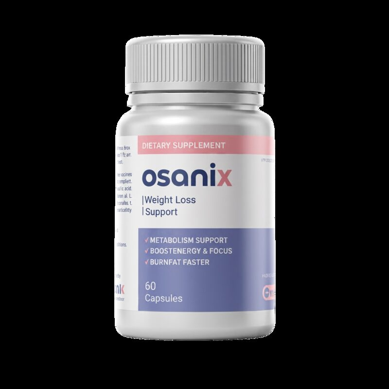
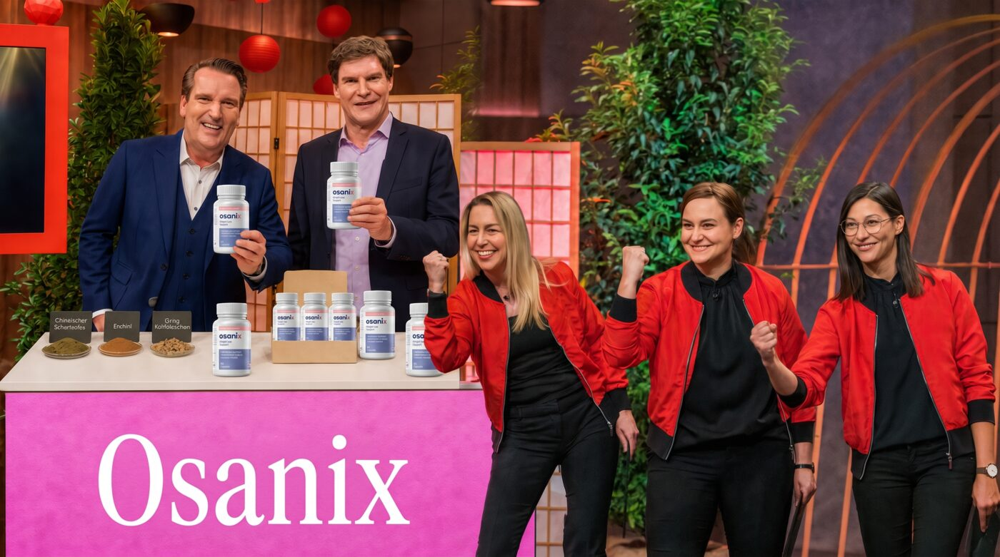
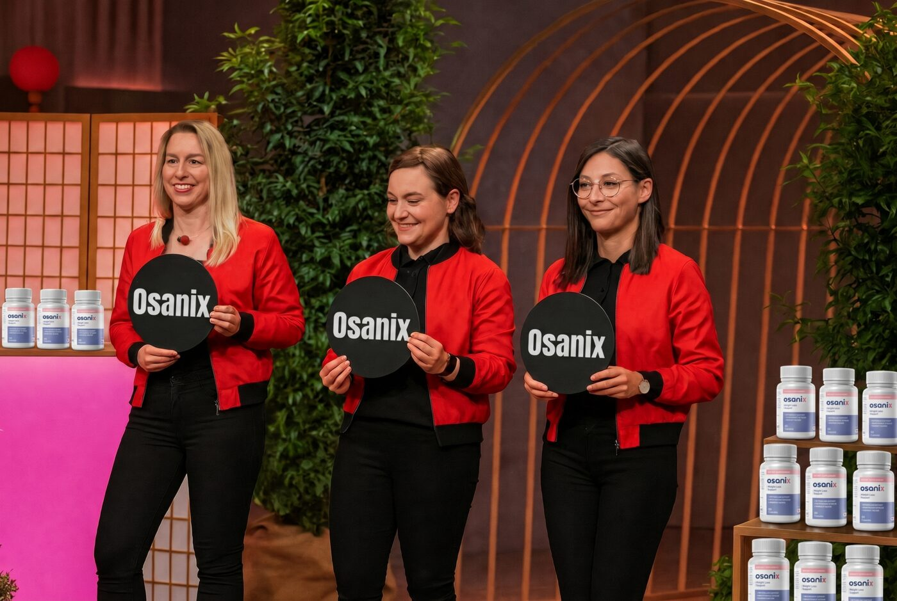
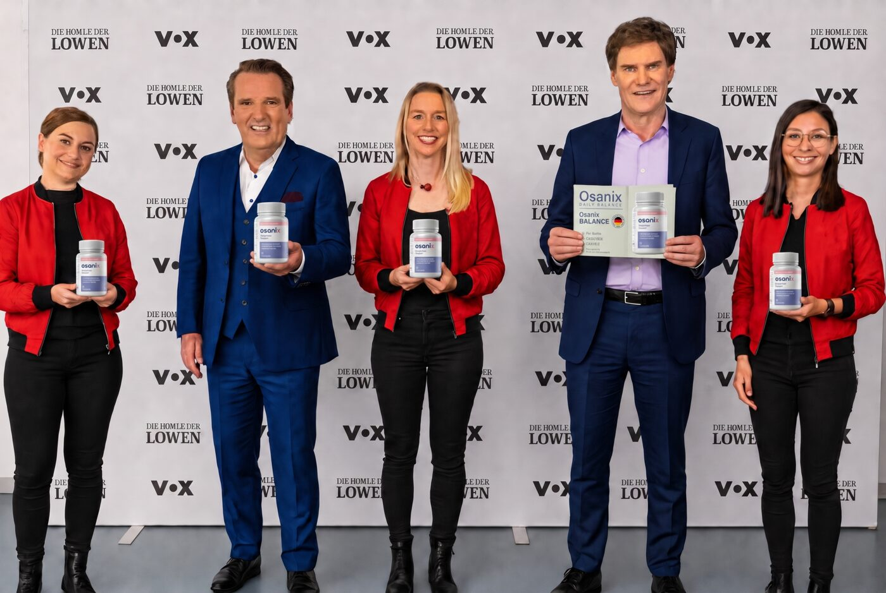
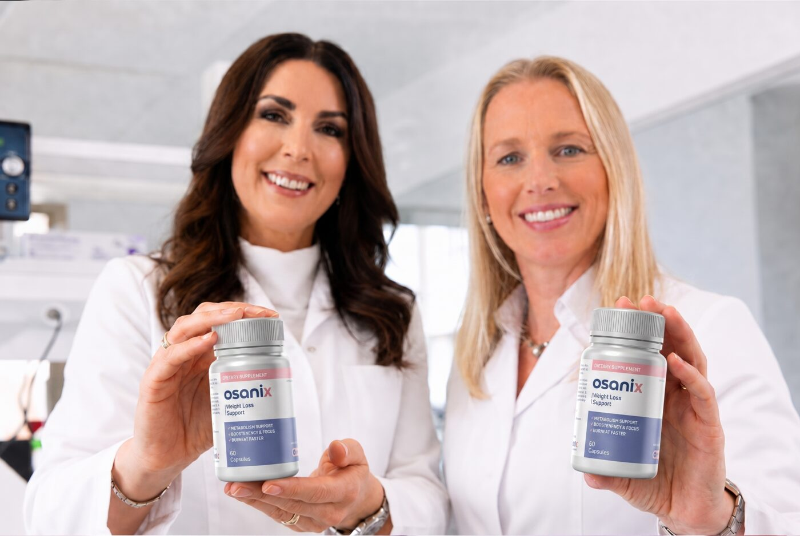
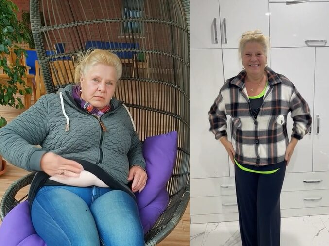

✓ Weniger Heißhunger
Silvia Wollny: „Nach der Einnahme habe ich viel weniger Hunger und fühle mich super.“ Die Kalorienzufuhr sinkt, weil der Appetit nachlässt.

Die drei Schwestern Anna, Lena und Janina Martin überzeugten die gesamte Jury — zum ersten Mal investierten alle Löwen unabhängig voneinander Millionen in ein einziges Produkt.
Nur online · diskreter Versand · kein Warenkorb hier
Es war die beliebteste Folge der neuen Staffel — die drei Schwestern konnten mit Osanix die gesamte Jury überzeugen.
Noch nie zuvor hat sich die gesamte Jury unabhängig voneinander dazu entschlossen, Millionen in ein einziges Produkt zu investieren.
Nachdem die Löwen 25 % Anteile kauften, halfen sie persönlich beim Re-Branding. Die Schwestern — Studium in Ernährungswissenschaft und Sportmedizin — hatten die Formel. Was fehlte, war das Marketing.
Die Investoren erkannten sofort: Osanix braucht „nur“ Hilfe bei der Vermarktung.

Sie priesen Osanix als „größten Schritt in der Geschichte des Gewichtsabnehmens“. Die Löwen waren skeptisch — bis die Studien auf dem Tisch lagen.
„Wir hatten nur mit ein paar Marketing-Tipps gerechnet. Wir waren uns nicht mal sicher, ob wir einen einzigen Investor gewinnen.“ — Janina
Sonderangebot von Osanix anzeigen → 30 Tage Geld-zurück-GarantieDie Formel geht Appetit, Stoffwechsel und Blutzucker gleichzeitig an — statt nur Kalorien zu zählen.
Zeitverzögerte Kapseln setzen Wirkstoffe über den Tag frei. Ein Fettverbrennungsmodus, der nicht nach zwei Stunden abbricht.
Statt im Magen zu verpuffen, wird die Formel aufgenommen — so wie es die Schwestern in den Tests beschrieben.
Wenn der Spiegel stimmt, fällt es dem Körper schwerer, Fett einzulagern. Weniger Crashes, weniger Abendhunger.
1.800 Teilnehmer. 7,5 kg mehr pro Monat vs. Kontrolle. Dänemark: 8,3 kg. Erst diese Zahlen überzeugten die komplette Jury.
Silvia Wollny: „Nach der Einnahme habe ich viel weniger Hunger und fühle mich super.“ Die Kalorienzufuhr sinkt, weil der Appetit nachlässt.
Statt 1.200 € im Monat für Injektionen: eine Kapsel-Routine morgens und abends — ein paar Minuten, wie Frank Rosin sagt.
Crash-Diäten schocken den Körper. Osanix soll ihn wieder auf ein normales Niveau bringen, statt den Jo-Jo-Effekt zu füttern.
Im optimalen Bereich lagert der Körper Fett schlechter ein. Weniger 15-Uhr-Crash, weniger zweite Portion.
Sophia Thiel: 12 Kilo in 2 Monaten ohne Lifestyle-Wechsel. Thomas: 44 Kilo in der Studie — ohne Sport und ohne Diät.
Standing Ovations und Investments von der gesamten Jury. Die Schwestern sind die ersten Teilnehmer, denen das passierte.
Klinische Versuche zeigten: Testpersonen konnten ihren Fettanteil drastisch senken — und das blieb bei weiterer Einnahme so.

Studien mit insgesamt 1.800 Teilnehmern überzeugten die Jury.
In einer Studie mit über 500 Personen verloren regelmäßige Anwenderinnen im Schnitt 7,5 kg mehr pro Monat als die Kontrollgruppe.
Dänemark, 1.300 Teilnehmer: durchschnittlich 8,3 kg pro Monat.

| Komponente | Was sie tut | Warum die Löwen nickten |
|---|---|---|
| Zeitverzögerte Kapseln | 24-Stunden-Abgabe | Fettverbrennung den ganzen Tag |
| Magenschleimhaut-Aufnahme | Schnelle Aufnahme | Wirkt, statt zu verpuffen |
| Stoffwechsel | Normales Niveau | Weniger Jo-Jo |
| Blutzucker | Optimaler Bereich | Fett lagert schlechter ein |
| Appetit | Heißhunger runter | Kalorien sinken von allein |

Die Schwestern steckten ihre ganze Energie in eine Formel. Die Studien überzeugten jeden Investor.
„Seit 3 Wochen dabei — ernsthaft 9,1 kg verloren.“
Jennifer Kaiser„Das einzige Produkt, das für mich funktioniert hat. Nach 2,5 Monaten passe ich nicht mehr in die Jogginghose.“
Maria S., 52„Ohne Lifestyle-Wechsel 12 Kilo in 2 Monaten.“
Sophia Thiel„44 Kilo in der Studie. Ohne Sport und ohne Diät.“
Thomas
Osanix gibt es derzeit nur online. Eine Apothekenzulassung für Deutschland ist in Arbeit.
Seit der Ausstrahlung im März war Osanix bereits ausverkauft. Heute bleiben 2.847 Packungen zum Löwen-Preis.
Täglich — morgens und abends, wie in den klinischen Tests beschrieben. Nicht nur unregelmäßig.
Derzeit nur online. Die drei Schwestern arbeiten an einer Apothekenzulassung für Deutschland. Kein Warenkorb auf dieser Seite — das Sonderangebot siehst du auf der nächsten.
Ja. 1.800 Teilnehmer insgesamt. In einer Studie mit 500 Personen verloren Anwenderinnen im Schnitt 7,5 kg mehr pro Monat als die Kontrolle. Dänemark: rund 8,3 kg/Monat.
Viele berichten Ergebnisse ohne harten Lifestyle-Wechsel. Sophia Thiel: 12 kg in 2 Monaten ohne ihren Alltag zu ändern. Trotzdem: Ergebnisse sind individuell.
30 Tage Geld-zurück-Garantie. Details auf der Angebotsseite.
WICHTIG: Durch klinische Tests wurde bewiesen, dass Du dieses Produkt TÄGLICH benutzen MUSST, um ähnliche Resultate zu erhalten. Keine medizinische Beratung. Ergebnisse können abweichen.